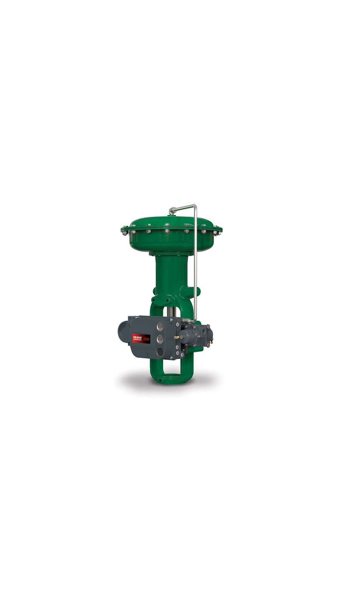
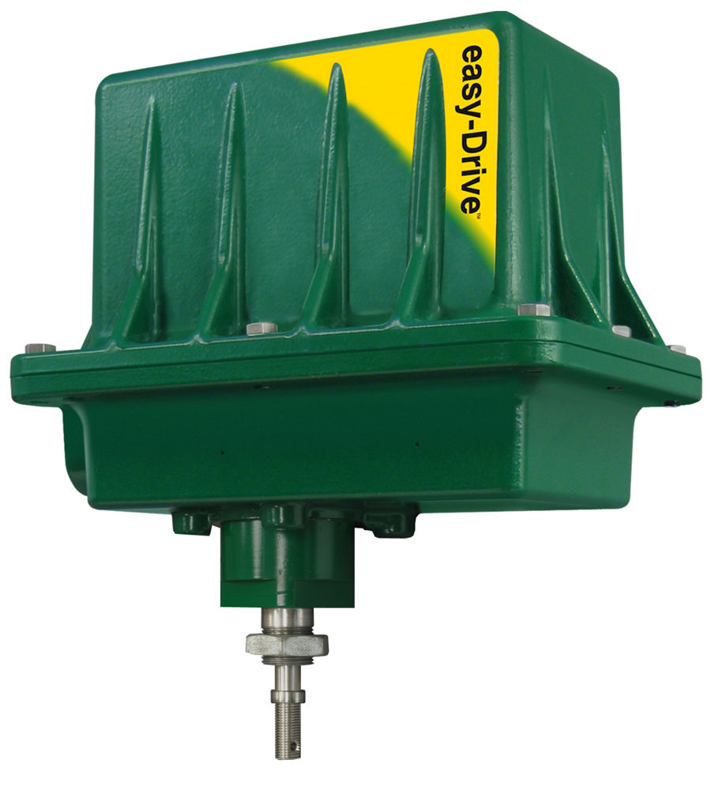
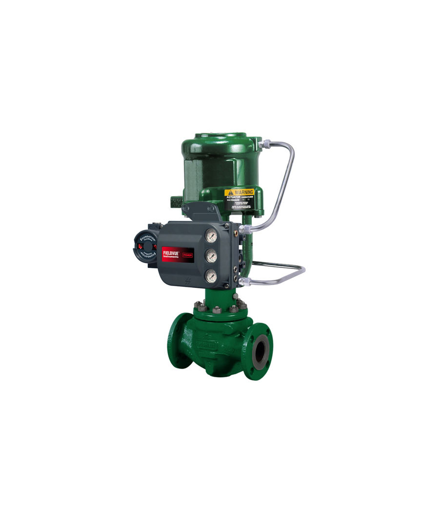
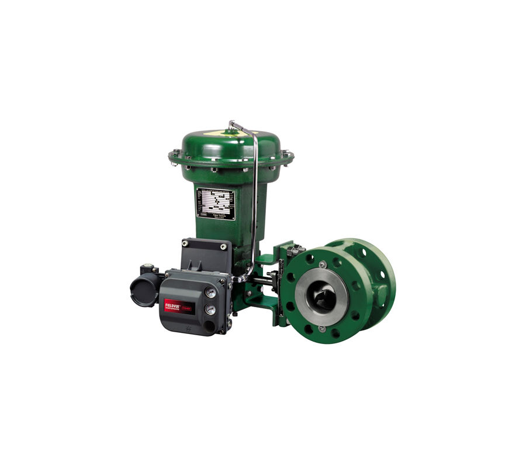
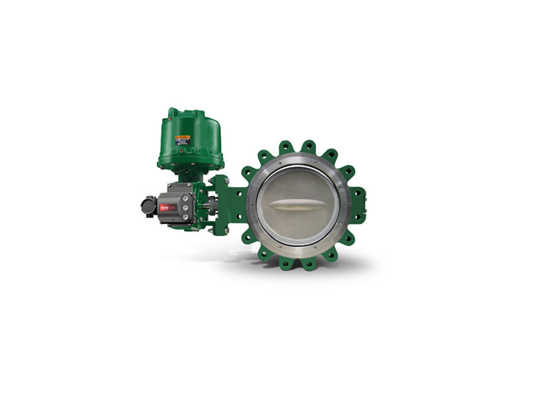

Actuator khí nén
Actuator khí nén Fisher: màng lò xo 657/667, 657C, piston 585C, 1061, actuator xoay 1051/1052, 2052 – lực và momen chuẩn cho van Fisher.
Actuator Fisher: màng lò xo 657/667, piston 585C, actuator xoay 1051/1052, 2052, 1061, actuator điện easy-Drive và tay quay – kèm tư vấn chọn theo lực/momen van.

Actuator khí nén Fisher: màng lò xo 657/667, 657C, piston 585C, 1061, actuator xoay 1051/1052, 2052 – lực và momen chuẩn cho van Fisher.

Actuator điện easy-Drive 200L/200R và tay quay, bộ vận hành tay Fisher 1008, 1077, 1078 cho van khi cần thao tác tại chỗ.
Actuator màng lò xo cho van cầu; 657 tác động thuận, 667 tác động nghịch; size 30–100.

Actuator xoay màng lò xo nhỏ gọn; size 1–3, ISO 5211; không cần bench set; SIL; tay quay tùy chọn.

Actuator piston tác động kép, lực tới 111 kN, hành trình tới 203 mm; lắp NAMUR; bản 585CR.

Actuator màng xoay lò xo hồi vị cho van xoay; fail-open/close; điều tiết hoặc on/off.

Actuator piston xoay mô-men lớn, gọn hơn 30%; size 30–130; áp tới 10,3 bar; điều tiết hoặc on/off.
Trụ sở TP. Hồ Chí Minh và văn phòng Vũng Tàu đều tiếp nhận RFQ, tư vấn cấu hình và bàn giao bộ chứng từ CO/CQ; bảo hành chính hãng 12 tháng kể từ ngày giao hàng. Yêu cầu gửi trong giờ làm việc được phản hồi trong cùng ngày; giao hàng toàn quốc.
150/41 Nguyễn Cư Trinh, P. Cầu Ông Lãnh
51 Lê Văn Lộc, P. Vũng Tàu